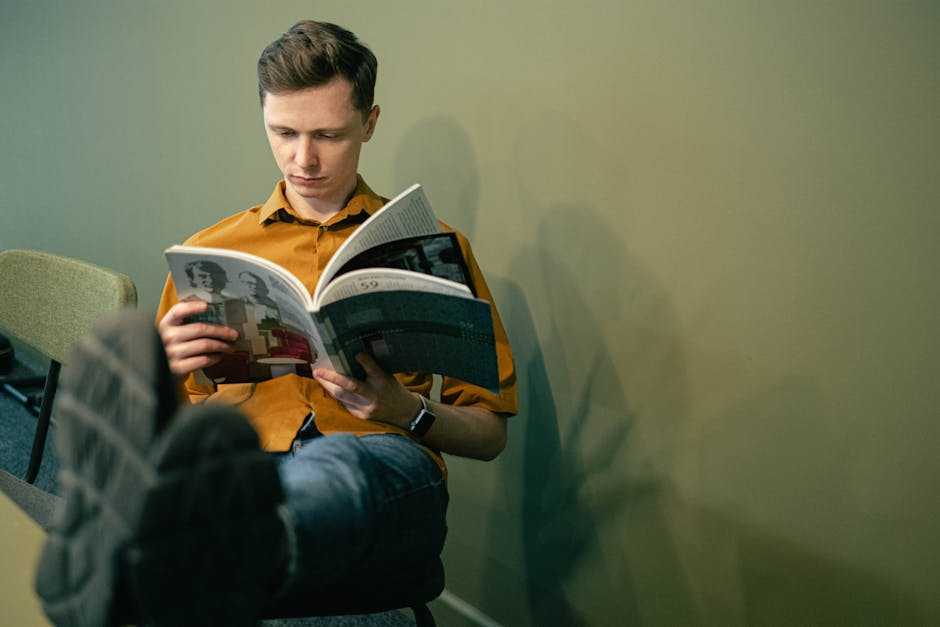
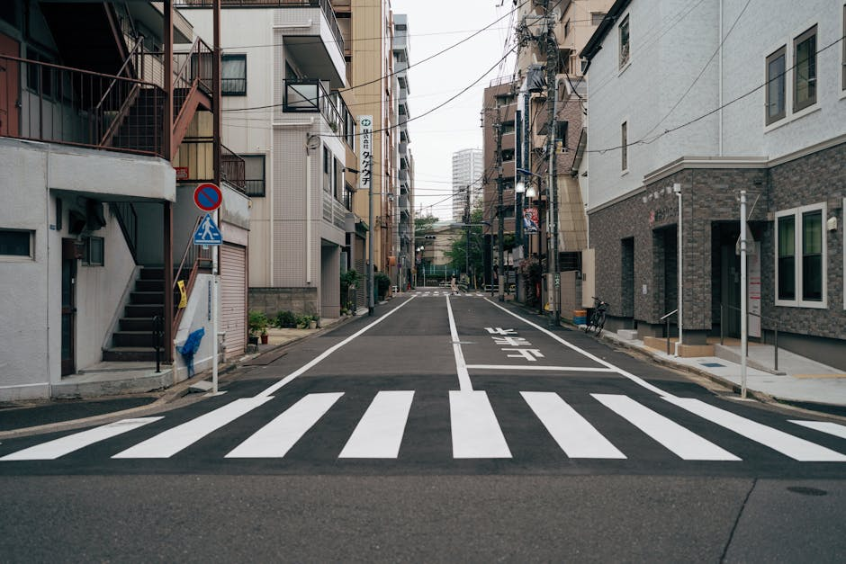

I Nostri Percorsi Tematici
Un'indagine continua sui linguaggi espressivi e sui cambiamenti sociali.

Arti Visive
Un'immersione profonda nelle correnti artistiche odierne. Analizziamo mostre, gallerie e il lavoro degli artisti che stanno ridefinendo i confini dell'estetica nella cultura contemporanea.

Letteratura & Teatro
Il palcoscenico e la pagina scritta come specchi della realtà. Proponiamo recensioni attente, saggi critici e scoperte letterarie per comprendere le narrazioni del nostro tempo.
Società Italiana
Riflessioni approfondite e analisi sui cambiamenti culturali, politici e sociali. Raccontiamo l'evoluzione della società italiana attraverso inchieste e dibattiti intellettuali di spessore.

La Voce dei Nostri Lettori
"Una prospettiva fresca e necessaria sulla cultura contemporanea. Gli articoli sulle arti visive offrono sempre chiavi di lettura inaspettate e ben argomentate."
— Marco T., Gennaio 2026
"Le recensioni di teatro e letteratura sono diventate il mio appuntamento fisso settimanale. Analisi lucide che vanno oltre la semplice trama."
— Giulia R., Febbraio 2026
"Ottimi spunti di riflessione sulla società italiana. È raro trovare uno spazio editoriale che tratti argomenti complessi con tale chiarezza e rigore."
— Lorenzo P., Marzo 2026
La Nostra Missione
Foliole Studio nasce dall'esigenza di creare uno spazio di dialogo e approfondimento dedicato alla cultura contemporanea. Crediamo che l'arte, in tutte le sue forme, sia lo strumento più potente per interpretare il mondo che ci circonda.
Attraverso la lente delle arti visive, del teatro e della letteratura, ci proponiamo di esplorare le complesse dinamiche della società italiana. Il nostro obiettivo è fornire ai lettori chiavi di lettura stimolanti, lontane dalla superficialità dell'informazione veloce.
Curiamo selezioni editoriali, recensioni e saggi per chiunque desideri nutrire il proprio spirito critico e rimanere aggiornato sulle evoluzioni del pensiero moderno.
Domande Frequenti
Di cosa tratta principalmente questo spazio editoriale?
Foliole Studio si concentra sull'analisi della cultura contemporanea e della società italiana. Esploriamo tematiche legate alle arti visive, proponiamo recensioni di letteratura e teatro, e offriamo spunti di riflessione sui cambiamenti sociali e intellettuali del nostro tempo.
Chi cura le recensioni di arti visive e teatro?
I contenuti sono curati e selezionati dalla redazione di Foliole Studio, avvalendosi di collaboratori appassionati ed esperti nei rispettivi settori culturali, con l'obiettivo di fornire prospettive informate e originali.
Con quale frequenza vengono aggiornati i contenuti?
Il nostro impegno è mantenere uno sguardo costante sulla scena culturale. Selezioniamo e promuoviamo nuovi saggi, approfondimenti e recensioni regolarmente, seguendo il ritmo degli eventi più significativi della letteratura e delle arti.
I vostri approfondimenti sulla società italiana sono legati a correnti politiche specifiche?
No, il nostro approccio è prettamente analitico e culturale. Esaminiamo le dinamiche della società italiana da un punto di vista sociologico e artistico, incoraggiando il pensiero critico indipendente senza affiliazioni partitiche.
Come posso restare informato sulle ultime pubblicazioni?
Vi invitiamo a visitare regolarmente questa pagina per scoprire le nostre selezioni promozionali e gli ultimi temi trattati nell'ambito della cultura contemporanea e delle espressioni artistiche.
Restiamo in Contatto
Hai domande sulle nostre selezioni editoriali o desideri proporre un tema di discussione sulla cultura contemporanea? Compila il modulo e la redazione di Foliole Studio ti risponderà al più presto.
Sede Redazionale
Italia
Orari
Lunedì - Venerdì: 09:00 - 18:00